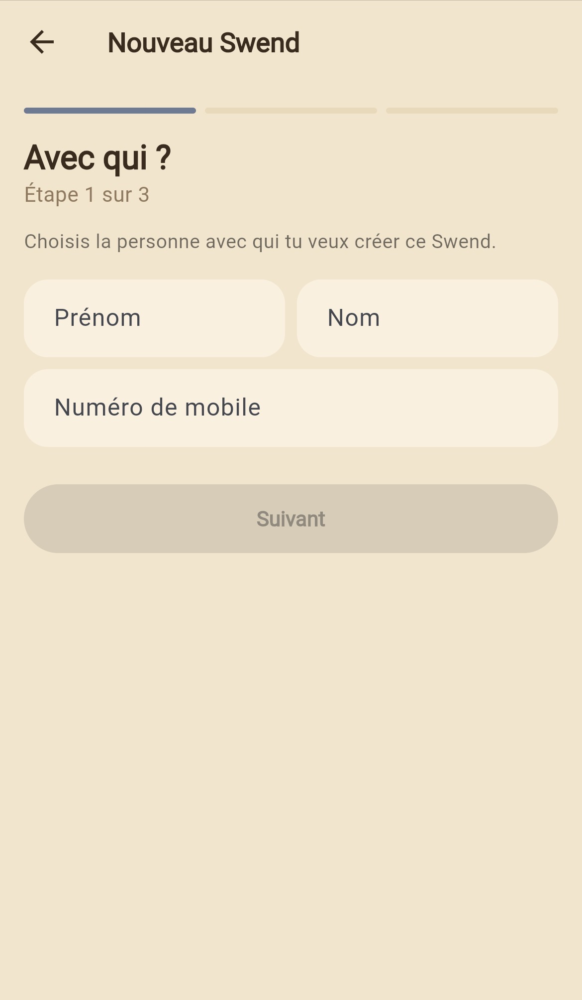
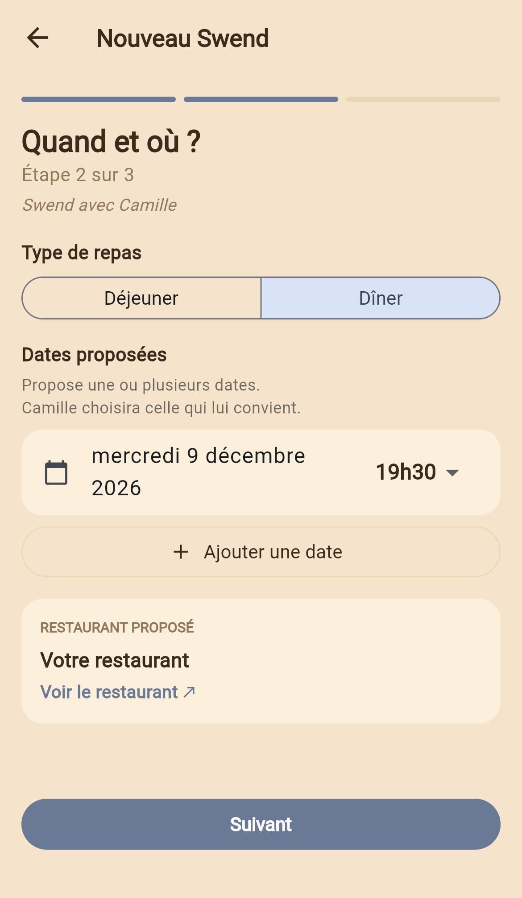

Scellez votre Swend.
Invitez un ami et choisissez ensemble un restaurant, une date et une heure. Pour déjeuner ou dîner, à vous de décider.
Le plaisir de se retrouver. L’engagement d’y être.
Pour que l’envie de se retrouver entre amis devienne un vrai rendez-vous, même au milieu d’agendas bien remplis.
L’app Swend ouvre bientôt.
Comment ça marche
Invitez un ami et choisissez ensemble un restaurant, une date et une heure. Pour déjeuner ou dîner, à vous de décider.
Une fois votre Swend scellé, vous vous engagez à être là et vous n’en reparlez plus jusqu’au jour J. Pas même un « toujours bon pour demain ? ».
Le jour venu, rendez-vous au restaurant. Vous y retrouvez votre ami ou, s’il a finalement un empêchement, la personne qu’il a choisie pour partager ce repas avec vous.
En cas d’imprévu
À l’avance : vous choisissez quelques personnes de confiance, prêtes à prendre votre place.
Au moment de l’imprévu : vous faites appel à l’une d’elles. Si elle accepte, elle vient à votre place.
Le jour J : sans avoir été prévenu, votre ami découvre au restaurant qui vient le retrouver.
Bientôt dans l’application
Vous pensez à quelqu’un ?
Choisissez la personne avec qui vous voulez partager ce moment. L’application vous accompagne ensuite pour préparer votre Swend.
C’est noté. C’est promis.
À l’origine de Swend
On le dit sincèrement. Puis les agendas se remplissent, on peine à trouver une date, on reporte. Et parfois, même quand le rendez-vous est pris, on l’annule trop facilement.
Avant de devenir une application, Swend était un rituel entre amis : choisir un restaurant, fixer une date longtemps à l’avance, s’engager et ne plus en parler jusqu’au jour venu. Une façon de donner à ce rendez-vous une place particulière dans nos agendas et à notre amitié.
On a ensuite ajouté une règle pour y glisser une once de fun et d’inattendu : en cas d’imprévu, on pouvait envoyer quelqu’un à notre place. Un ami en commun, quelqu’un qu’on avait envie de faire rencontrer à l’autre… N’importe qui tant que ça pouvait matcher en fait. Le tout sans prévenir, pour que le rendez-vous continue, avec une touche de mystère.
Swend est né pour redonner du poids à nos « on se voit », faire du rendez-vous un engagement auquel on tient, et de l’attente une partie du plaisir.
Vous avez déjà quelqu’un en tête ?
L’app Swend ouvre bientôt. Gardez cette personne en tête.
Restaurants partenaires
Deux personnes choisissent votre établissement pour un rendez-vous fixé à l’avance, dont elles ne parlent plus jusqu’au jour J.
Faites partie des premiers restaurants à accueillir l’expérience Swend.
Les Swends sont fixés au moins quinze jours avant le rendez-vous.
Si l’un des deux ne peut plus venir, une personne de confiance peut prendre sa place : le rendez-vous est maintenu.
Vous décidez avec nous des jours et des créneaux ouverts à Swend, au déjeuner comme au dîner.
Construisons les premiers Swends ensemble
Jours, créneaux et conditions : nous définissons avec vous un fonctionnement adapté à votre organisation.
Des tables de deux, sur les jours et créneaux convenus. Swend réserve en son nom, vérifie chaque réservation et vous prévient au plus tôt en cas d’annulation.
Commençons par quelques réservations. Vos retours et ceux des convives nous aideront à ajuster l’expérience ensemble.
Bientôt dans l’application
Quand deux personnes préparent leur Swend, elles choisissent la date et le lieu parmi nos établissements partenaires.

Les lieux où l’on se retrouve
Des lieux chaleureux, plutôt intimistes, où l’on se sent bien accueilli et où le service est attentionné. Des tables où l’on prend plaisir à se retrouver, à prendre son temps et à se parler.
À imaginer ensemble
Votre accueil donne le ton. Si vous le souhaitez, une petite attention peut rendre ce moment encore plus singulier.
Imaginons un geste adapté à votre maison et à votre façon de recevoir, pour que chaque Swend y trouve sa place.
Un modèle à construire ensemble
Une commission : par couvert servi ou en pourcentage de l’addition, à convenir avec vous.
Sans engagement : vous arrêtez quand vous voulez.
Parlons de votre établissement et de vos envies.
Swend est porté par Kevin Arner et Eliot Schlang, à Paris.
Swend ouvre bientôt. Les premiers restaurants partenaires accueilleront les premiers Swends.
Contact
Une question sur Swend, une idée à partager ou l’envie de devenir restaurant partenaire ? Écrivez-nous.
contact [arobase] swend.frInformations légales
Le site www.swend.fr est édité par Kevin Arner et Eliot Schlang, pour le compte de la société Swend, en cours de création.
Adresse : 40 rue Victor Hugo, 92800 Puteaux.
Contact : contact [arobase] swend.fr
Eliot Schlang.
GitHub, Inc. (GitHub Pages), 88 Colin P. Kelly Jr. Street, San Francisco, CA 94107, États-Unis.
Ce site ne dépose aucun cookie et ne collecte aucune donnée personnelle par formulaire. Les messages envoyés à l’adresse de contact servent uniquement à y répondre. L’hébergeur peut enregistrer des données techniques de connexion, comme l’adresse IP, pour assurer la sécurité du service.
Les textes, logos et visuels de ce site appartiennent à leurs auteurs. Toute reproduction sans autorisation est interdite.